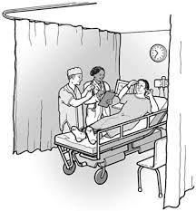

Injustices
Healthcare vs Deaf Community
In the United States, healthcare systems often show signs of audism (discrimination or prejudice against individuals who are deaf or hard of hearing) towards deaf people. The National Association of the Deaf states that “individuals whose language is American Sign Language (ASL) or another sign language are often denied access to the health care system because most providers do not provide adequate communication access in ASL or any other sign language, through qualified interpreters”. Although by law hospitals are required to have a valid method of communication with their patients, this law is repetitively broken with their deaf patients because they do not satisfy the needs of a deaf patient.
Deaf is a community rather than a disability, and not knowing the fact that they have the same potential as others can cause unjust decisions by regular people and even public facilities. The article, Empowering the Deaf. Let the Deaf be Deaf by Irma M. Munoz-Baell and M. Teresa Ruiz explains the importance of knowing sign language and goes in-depth about the personal and cultural consequences of mistreating the deaf. Munoz-Baell and Ruiz state that “lack of knowledge about communication mechanisms and how they work in conjunction with culture - have unfavorably influenced medical, legal, and educational policies for the deaf” (Munoz-Baell, Ruiz 40-41). The lack of knowledge of the language can cause low self-esteem and provoke deaf people to lack social relationships because the deaf community recognizes “deaf” as a culture rather than a disability, where anybody who speaks sign language, is constantly involved and advocates for equal rights for the deaf, is part of it. The deaf community includes Children of Deaf Adults (CODA) because they are constantly interacting with deaf people.
Munoz-Baell, Irma M., and M. Teresa Ruiz. “Empowering the Deaf. Let the Deaf Be Deaf.” Journal of Epidemiology and Community Health (1979-), vol. 54, no. 1, BMJ, 2000, pp. 40–44.